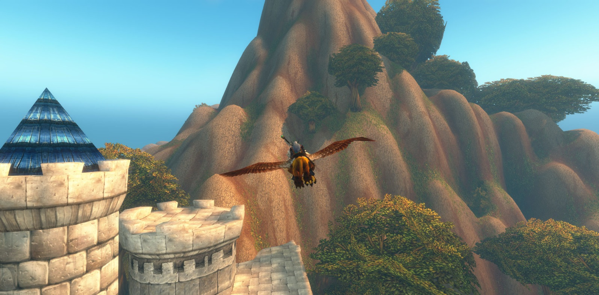
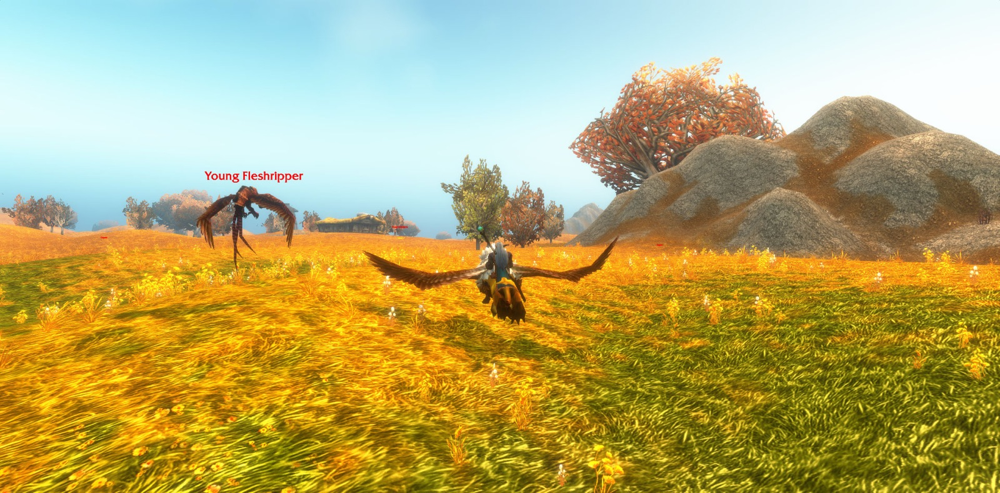
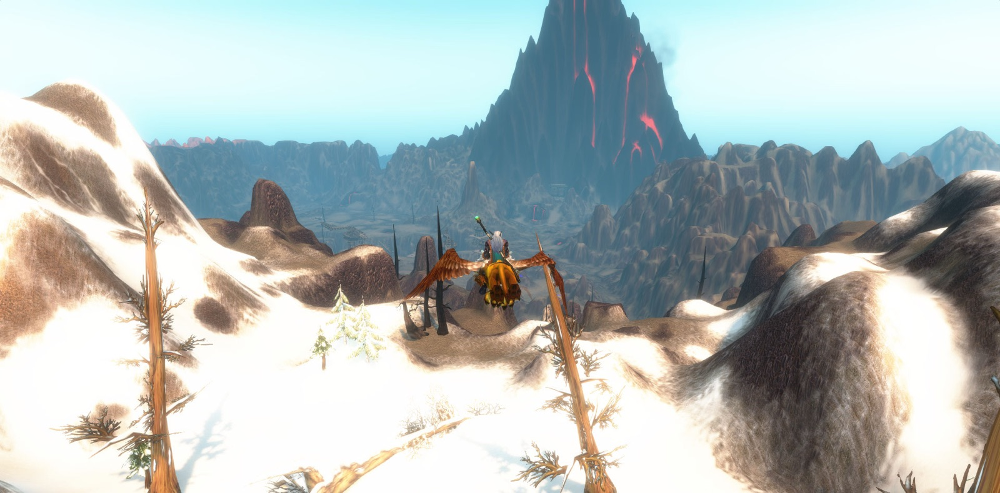
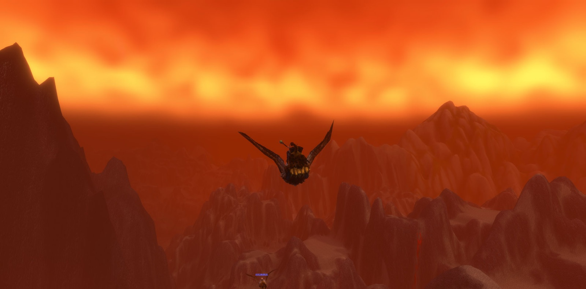
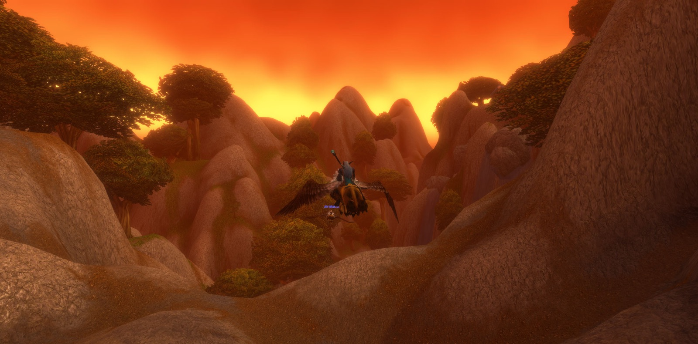

Cassidy Darkstar set out from the Deepwater Tavern by Menethil Harbor, and his road ran first to Ironforge, where he paused at the gates to take a picture. In Tinker Town he brought Castpipe's Task and Klockmort's Essentials to their end and took up new errands in their place: Data Rescue, The Day After, The Grand Betrayal and Essential Artificials. In The Library he accepted Mythology of the Titans, and in The Forlorn Cavern the matter of Knowledge in the Deeps was laid to rest. Then he went south through Searing Gorge and the Burning Steppes, down into Elwynn Forest and on to Stormwind. There he completed Retrieval for Mauren and, in the Wizard's Sanctum, took up Power Overwhelming.


From there the road bent east to the Redridge Mountains and to Lakeshire beside Lake Everstill. He delivered the Ink Supplies, found Oslow's Toolbox and returned it, and climbed into Redridge Canyons for iron rivets and iron pikes until The Everstill Bridge was mended. At Alther's Mill he slew twelve Greater Tarantulas and broke six of their eggs. In the Town Hall he took the wanted bills for Gath'Ilzogg and Incinerator Gar'im, and with them he went to Stonewatch. At the Keep he was joined, though only briefly, by four companions on the road. Angry and Aimes were hunters, and they kept beside him longest. Thordin, also a hunter, stayed but a little. Shadow, a druid of his own calling, was met and gone in nearly the same breath. From Stonewatch he turned back toward Menethil.


Then Cassidy took up Wiley's Note, an errand that would not let him rest. He bore it to Gryan Stoutmantle in the Sentinel Tower on Sentinel Hill in Westfall, and was sent on to Mathias Shaw in SI:7, and came back with Shaw's report. From the hill he went down to Moonbrook and found A Mysterious Message, and he carried it to the tower, and so The Defias Brotherhood was ended. North again he went, past Blackrock Mountain and The Cauldron, to Kharanos, where The Day After was completed and Gnogaine given into his hands. He passed within Gnomeregan and slew Addled Lepers, three in all, and he stopped there to take pictures. In the Train Depot he fell, and that is all that need be said of it.


Last of all he went by Gol'Bolar Quarry and through North Gate Pass into Loch Modan. At Algaz Station he finished Stormpike's Delivery, recovered the Miners' Gear from Silver Stream Mine, and was charged to carry Stormpike's Order to Furen Longbeard in Stormwind. By The Loch he found Bingles, and afterward Bingles' blastencapper, hammer, wrench and screwdriver. He walked on to The Farstrider Lodge, Ironband's Excavation Site, Mo'grosh Stronghold and Stonewrought Dam, until no corner of Loch Modan remained unexplored. At Dun Algaz he reported to Mountaineer Rockgar, and in Silver Stream Mine he gathered twelve tunnel rat ears and brought them to Thelsamar. There he halted, with Stonegear's Search and The Algaz Gauntlet still lying before him on the road.






